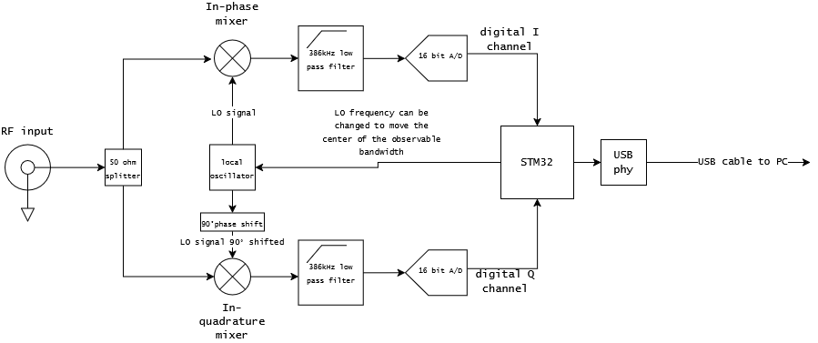
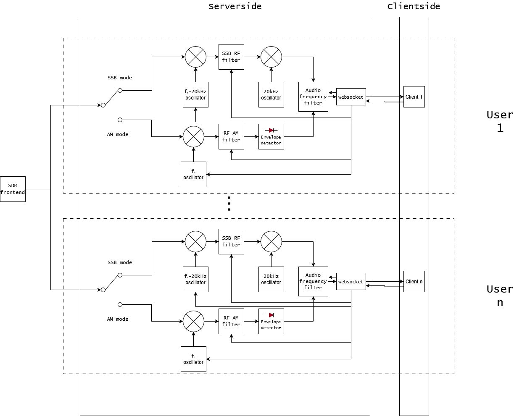

The receiver itself is a custom built SDR frontend that utilizes a quadrature demodulator topology. The output from the antenna is fed into two mixers with one of them being 90° out of phase. Thanks to the product to sum identity, the multiplication between the RF and local oscillator signals shifts the incoming RF to near 0Hz where it can be digitized and sent to a computer. The two digital streams can then be treated as one complex valued signal due to one of the streams being 90° phase shifted, which captures the full 772khz bandwidth.

The actual backend for this website is much more complicated but what it does is it gives each user an individual "virtual radio" that can tune around the 772kHz bandwidth being output by the frontend. Each user has their own RF and audio frequency filters which can be used to select for bandwidth and tuning frequency.
In AM mode, the target frequency is shifted to 0Hz by multiplying it with a complex exponential rotating at the target frequency (Note that this is the complex version of an RF mixing operation). Next, the signal is passed through a bandpass filter with a user defined bandwidth. Finally, the length of the complex samples that make up the signal are then taken in order to get the envelope of the AM signal as the audio is contained within it. The resulting audio signal is then low pass filtered and DC blocked before being streamed to the client.
SSB demodulation is less intuative but still trivial to pull off. First, the target frequency is shifted down to -20kHz where it is then bandpass filtered using a filter of user chosen bandwidth. Then it is shifted back up to 0Hz where it is then passed through an audio frequency filter before being streamed to the user.
